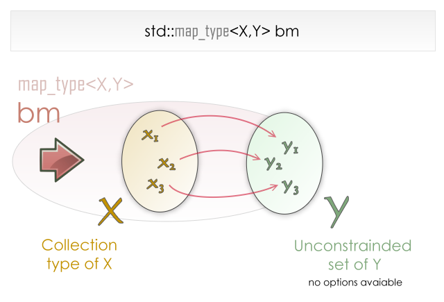

Map is a container where we store elements in the formed by combination of key and associated value to the key in a particular order.
Syntax:
[map_type]<key,value> [variable_name];

Here, all the elements that are present in the X are keys and their
associated values are the elements that are present in the Y.
For using the map data structure in our program ,we should include “map”
header inside our program.
#include<map> if the map we want to use is ordered.
map<string , int> table;
table[“Ravi”]= 5;
table[“Rajiv”]=4;
table[“Sunny”]=20;
Here, Ravi ,Rajiv and Sony are the keys of the map and 5,4,20 are the associated values to the keys Ravi, Rajiv and Sony.
Output:
5
4
20
Internally, map are implemented by self balanced binary search trees like Red-Black Trees.
Let us know about the iterators that are used for the map data structure
1.begin
-The begin iterator a points t the first element present in the map
Syntax:
Iterator{ returning value } [map_name]. begin()
2.end
-The end iterator points to beyond the end element in the map
Syntax:
Iterator { returning value } [map_name].end()
3.rbegin
- The rbegin iterator is a reverse iterator that points to last element in the map
Syntax:
Iterator { returning value } [map_name].rbegin()
4.rend
- The rend iterator points to element preceding the first element in the map
Syntax:
Iterator { returning value } [map_name].rend()
Let us jump into the functions that are used for map data structure
1.insert
- We can insert the elements into our map data structure dynamically i.e, the size of the map container increases dynamically when we are going to insert the elements in the map data structure.
Syntax:
[map_name].insert( { key , value } );
2. erase
- We can remove the elements within the map by specifying the key associated with it.
Syntax:
[map_name].erase( key );
3. swap
- We can interchange the elements that are present in one map with the other map.
Syntax:
[map_name].swap([other_map_name]);
4. clear
- Removes all the elements present inside the map container.
Syntax:
[map_name].clear();
Let us know about the operations that can be done on map data structure
1.find
- Searches for the specified key within the map container and returns an iterator that contains the key.
- If the element is not found within the map container ,then the oteartor points to the end of the map data structure.
Syntax:
Iterator {returning value }[map_name].find(key);
2.count
- Searches for the specified key and counts if there is any match with the specified key.
- Return type is unsigned integer.
Syntax:
Integer { returning value } [map_name].count(key);
3.lower_bound
-Returns an iterator pointing to the key present inside the map container.
Syntax:
Iterator { returning value } [map_name].lower_bound(key);
4.upper_bound
- Returns an iterator pointing beyond one step after the key present in the map container.
Syntax:
Iterator { returning value } [map_name].upper_bound(key);
5.equal_range
- Returns a range that includes all elements whose value is equal to the key starting from the first occurrence of key to last occurrence of key.
Syntax:
Pair< Iterator , Iterator> {returning value } [map_name].equal_range(key);
6.empty
- Checks whether map container is empty or not .
-Return type is none.
Syntax:
[map_name].empty();
7.size
- Returns the number of elements prexent inside the map container.
Syntax:
Integer type { returning value } [map_name].size();
8.max_size
- Returns the maximum number of values the map container can hold.
Syntax:
Integer type { returning value } [map_name].max_size();
Output :
Printing the number of elements present inside the map :
Count of the elements with key as Telangana :
1
Printing the number of elements present inside the map after deletion :
0
Keys and values present inside the map location :
Key is : Delhi and its value is : 36
Key is : Gujarat and its value is : 89
Key is : Kerala and its value is : 35
Key is : Telangana and its value is : 57
keys and values present inside the map marks:
Key is : 90 and its value is : 76
Key is : 63 and its value is : 10
Key is : 75 and its value is : 56
Key is : 40 and its value is : 45
Advantages of Map:
Map stores the keys in the ascending order whereas
Maps are implemented by Self balanced BST hence, accessing elements inside the map are much faster .
For map, time complexity for Insertion, Searching and Deletion takes O(log n).
Disadvantages of Map:
More space is required for the map.
For getting grip over maps, try solving these problems.
https://leetcode.com/problems/word-frequency/
https://leetcode.com/problems/sort-characters-by-frequency/
https://leetcode.com/problems/top-k-frequent-words/
Happy Coding 😊
By Programmers Army
Contributed by: Ravi Teja Chidurala